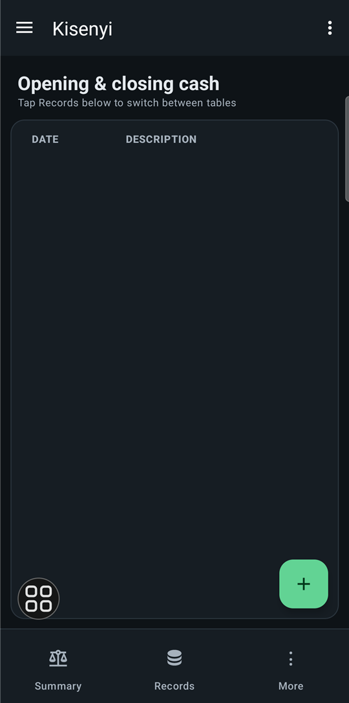
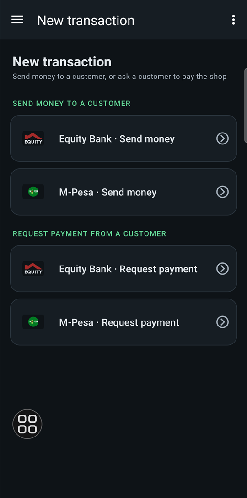
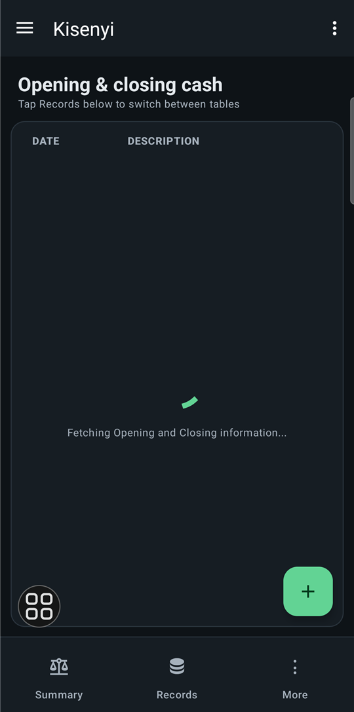

Getting started
Signing in
- Open FrankMpesa and tap your profile on Who's working today? The profile you used last is outlined in green.
- Enter your password and tap Log in. After your first login the app offers to set up your fingerprint; once it is set up you can tap Use fingerprint instead.
- New staff profiles appear after an administrator adds them. Pull the profile list down, or tap Reload profiles from server, to fetch new ones.
Finding your way around
Tap ☰ at the top left to open the side menu. It has four groups:
- Branches Kisenyi and Town Branch records
- Operations New transaction and Exchange rates
- People Customers
- App Settings
The ⋮ menu at the top right has the Help Center and Log out.
Kisenyi branch
Kisenyi keeps four tables. The screen opens on Opening & closing cash; tap Records in the bottom bar to switch to Sales, Buys or Expenses.
Working with rows
- Open a row: tap it to show every field underneath.
- Change a row: tap Edit, update the fields, then tap Save and confirm.
- Delete a row: tap Delete and confirm. This cannot be undone.
- Add a row: tap the green + button.
Bottom bar
- Summary: pick a date to see that day's totals and whether the cash balances.
- Records: switch between the four tables.
- More → Sync changes: send records saved on this phone to the server straight away.

What each table holds
| Table | Columns |
|---|---|
| Opening & closing cash | Date, Uganda and Kenya opening, cash in and closing, description |
| Sales | Date, amount, rate, country, recipient name and phone, sender and receiver account, transaction ID, status, description |
| Buys | Date, amount, rate, country, name, description |
| Expenses | Date, amount, description |
Town Branch
Town Branch keeps Withdrawals, Deposits and Commission. Tap Records to switch table; Commission in the bottom bar opens the commission table directly. Each record is a card: tap Edit to change its values, then Save.
Fields on withdrawal and deposit cards
| Section | Field | Meaning |
|---|---|---|
| Mobile money | MTN agent / MTN personal | MTN Mobile Money, agent and personal lines |
| Mobile money | Airtel agent / Airtel personal | Airtel Money, agent and personal lines |
| Accounts | Equity (Uncle), Equity (Aunt) | Equity Bank accounts: amount and its rate |
| Accounts | Joint account | Joint account: amount and rate |
| Accounts | M-Pesa (Uncle), M-Pesa (Aunt) | M-Pesa lines: amount and rate |
| Accounts | Agent order, Agent Airtel | Agent float: amount and rate |
| Accounts | Tanzania, Rwanda | Cross-border amounts and their rates |
Commission cards hold the date, commission in and commission out.
New transaction
Open Operations → New transaction and choose:
- Send money to a customer: from the shop's Equity account or M-Pesa paybill to the customer's phone or account.
- Request payment from a customer: the customer gets a prompt on their phone and enters their PIN to pay the shop.
Phone numbers can be typed as 0712 345 678 or 254712345678. Amounts are in shillings; M-Pesa only accepts whole shillings.
What the status means
- Pending
- Sent. Waiting for the customer or the bank to answer.
- Success
- The money moved. For a payment request, the buy is recorded only now.
- Failed
- Refused, e.g. wrong PIN or not enough balance. Nothing was paid.
- Cancelled
- The customer declined the prompt.
- Timeout
- No answer in time. Ask the customer and try again.

Exchange rates
- Open Operations → Exchange rates and pick Kenya, Congo, Tanzania or Rwanda.
- Each country has two cards, one per direction (e.g. Uganda → Kenya and Kenya → Uganda).
- Enter the rate and the minimum and maximum amounts, then tap Save.
Rates are saved on the phone first and sent to the server when there is a connection. Customers see today's rates on the FrankMpesa website.
Customers
- All customers: name and phone for everyone registered. Tap a customer to see their email, countries and notes.
- Edit customers: tap the button at the bottom to change details, then Save changes. In edit mode each customer also shows Delete.
- Top customers: will list the most active customers once there is enough history.
Customers register themselves on the website and log in with their phone number and password ID.
Settings
| Setting | What it does |
|---|---|
| Dark mode | Switches the app between light and dark colours for your profile. |
| History to load | How far back records are fetched: last 3 days, last 7 days, this month or everything. |
| Change password | Sets a new password for your profile. |
| Clear local data | Removes records saved on this phone. Anything not yet synced is lost. |
Staying up to date
Pull down to refresh
On Kisenyi, Town Branch, All customers and the profile list, pull the list down to reload it. The app first sends your own unsynced changes, then fetches what other staff changed.
Working offline
Without a connection a small Offline · showing saved data label appears under the top bar. You can keep working: records are saved on the phone and sent to the server when the connection returns. The label disappears when you are back online, and nothing shows in your notifications.

Common questions
I see "Network error, showing local data"
The phone has internet but could not reach the FrankMpesa server. The screen shows what is saved on the phone. Try again in a moment, or ask the administrator to check that the server is running.
A colleague's changes don't show on my phone
Pull the list down to refresh. If you changed History to load in Settings, older records outside that range are not fetched.
A payment request stays "Pending"
The customer has not answered the prompt yet, or the result is delayed. Results usually arrive within a minute. If it stays pending, ask the customer whether they paid before sending another request.
The customer says they never got the prompt
Check the phone number and the network (Safaricom or Equitel). Prompts only reach phones that are switched on and have network.
I deleted a row by mistake
Deleted rows cannot be restored from the app. Add the row again with the + button.